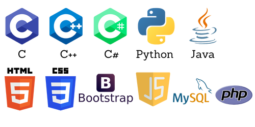

Throughout my academic years, I've encountered and used the above programming/webdev languages.
We only mostly dabbled with each of them, but I think the curriculum wanted to enforce us with the familiarity with many programming languages.
Aside from developing my technical skills, the pandemic taught me about collaborating with other people when there are groupworks--all online,
and teaching myself how to learn more efficiently since some professors ghosted us and literally left us to ourselves to learn about their subject course curriculum.
What I have noticed that I enjoy the most while doing all my academic projects
is that I enjoy debugging other people's outputs: testing each functionality if they work well,
and if they don't, I also enjoy fixing the bugs. Although I can write codes, I am not confident with how well
I can write codes from scratch, though I have no problems understanding and analyzing existing codes, and as mentioned above, I enjoy doing it.
When I'm not doing any programming thing, I like spending my leisure time binge watching K-Drama, Series, Anime, BL, you name it.
I used to also constantly read novels but honestly, I just am not in the right headspace to do it lately, but I'll surely go back to it soon.
And as mentioned at the Homepage, I also enjoy listening to music. Whatever I'm doing, just know that I always have my Spotify playing in the background.